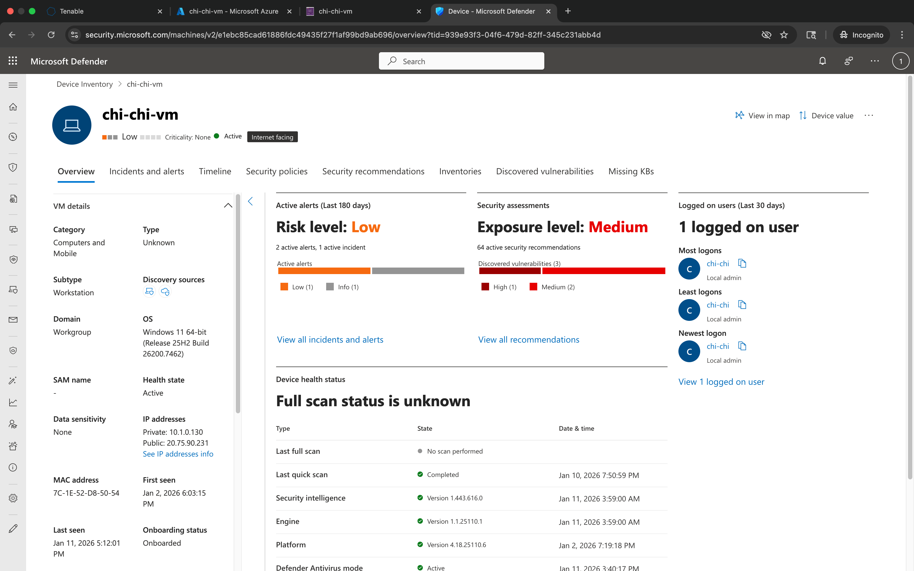
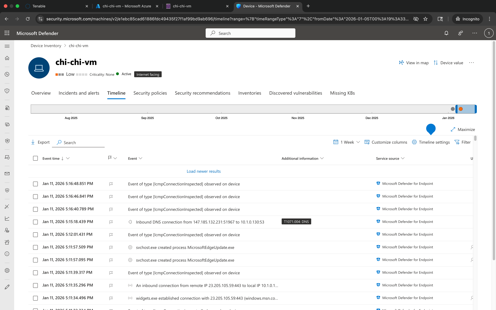

📌 Overview
This project demonstrates how unauthorized TOR Browser usage appears in Microsoft Defender for Endpoint (MDE) telemetry and how to hunt for it using Advanced Hunting (KQL).
Goal: demonstrate real SOC-style investigation, evidence collection, and documentation skills.
🧰 Environment
🧭 Investigation Scope & Coverage
This investigation focused on identifying unauthorized anonymization software usage on a managed Windows endpoint by validating telemetry coverage across file, process, and network activity.
🔥 Phase 1 — Simulated Unauthorized TOR Activity
Each step includes: what/why, PowerShell activity generation, PowerShell evidence, KQL query, and KQL results evidence.
1.1 Validate Device Visibility
Confirmed the endpoint is visible and actively reporting to ensure telemetry capture.
PowerShell Commands
# Validation performed in Microsoft Defender portal (no local command)PowerShell Evidence Screenshot
KQL Query
DeviceInfo
| project Timestamp, DeviceName, OnboardingStatus, SensorHealthState
| order by Timestamp descKQL Results Screenshot — KQL_DeviceInfo_Device_Visibility

1.2 Confirm Defender Sensor Running
Verified the Defender Sense service is running to confirm telemetry ingestion.
PowerShell Commands
Get-Service -Name SensePowerShell Evidence Screenshot
KQL Query
DeviceInfo
| project Timestamp, DeviceName, SensorHealthState
| order by Timestamp descKQL Results Screenshot — KQL_DeviceInfo_Sensor_Health

1.3 Download TOR Installer
Downloaded the TOR Browser installer to generate file telemetry.
PowerShell Commands
# TOR installer downloaded via browserPowerShell Evidence Screenshot

KQL Query
DeviceFileEvents
| where FileName startswith "tor-browser-windows"
| project Timestamp, DeviceName, ActionType, FileName, FolderPath
| order by Timestamp descKQL Results Screenshot — KQL_DeviceFileEvents_TOR_Installer_Download

1.4 Confirm Installer Filename
Confirmed exact installer filename to ensure accurate hunting.
PowerShell Commands
# Verified installer filename in DownloadsPowerShell Evidence Screenshot

KQL Query
DeviceFileEvents
| where FileName contains "tor-browser"
| project Timestamp, DeviceName, FileName, FolderPath
| order by Timestamp descKQL Results Screenshot — KQL_DeviceFileEvents_TOR_Installer_Filename
1.5 Execute Silent Install
Executed a silent installation to simulate unauthorized software deployment.
PowerShell Commands
tor-browser-windows-x86_64-portable-15.0.3.exe /SPowerShell Evidence Screenshot

KQL Query
DeviceProcessEvents
| where ProcessCommandLine has "tor-browser-windows"
| where ProcessCommandLine has "/S"
| project Timestamp, DeviceName, AccountName, FileName, ProcessCommandLine
| order by Timestamp descKQL Results Screenshot — KQL_DeviceProcessEvents_TOR_Silent_Install
1.6 Launch TOR Browser
Launched TOR to generate process execution telemetry.
PowerShell Commands
# Launched TOR Browser frome the extracted folderPowerShell Evidence Screenshot

KQL Query
DeviceProcessEvents
| where FileName in~ ("tor.exe","firefox.exe")
| project Timestamp, DeviceName, AccountName, FileName, ProcessCommandLine
| order by Timestamp descKQL Results Screenshot — KQL_DeviceProcessEvents_TOR_Launch

1.7 Generate TOR Network Activity
Generated anonymized network connections through TOR.
PowerShell Commands
# Browsing activity through TORPowerShell Evidence Screenshot

KQL Query
DeviceNetworkEvents
| where InitiatingProcessFileName in~ ("tor.exe", "firefox.exe")
| where RemotePort in (9001,9030,9040,9050,9051,9150)
| project Timestamp, DeviceName, InitiatingProcessAccountName, InitiatingProcessFileName, RemoteIP, RemotePort, RemoteUrl
| order by Timestamp descKQL Results Screenshot —
KQL_DeviceNetworkEvents_TOR_Network_Activity
1.8 Create and Delete Suspicious File
Created and deleted a file to simulate basic anti-forensics behavior.
PowerShell Commands
cd $env:USERPROFILE\Desktop
New-Item -Name "tor-shopping-list.txt" -ItemType File
Add-Content -Path "tor-shopping-list.txt" -Value "fake item 1"
Add-Content -Path "tor-shopping-list.txt" -Value "fake item 2"
Remove-Item -Path "tor-shopping-list.txt"PowerShell Evidence Screenshot

KQL Query
DeviceFileEvents
| where FileName == "tor-shopping-list.txt"
| project Timestamp, DeviceName, ActionType, FileName, FolderPath, InitiatingProcessFileName, InitiatingProcessCommandLine
| order by Timestamp descKQL Results Screenshot —
KQL_DeviceFileEvents_Shopping_List_FileEvents